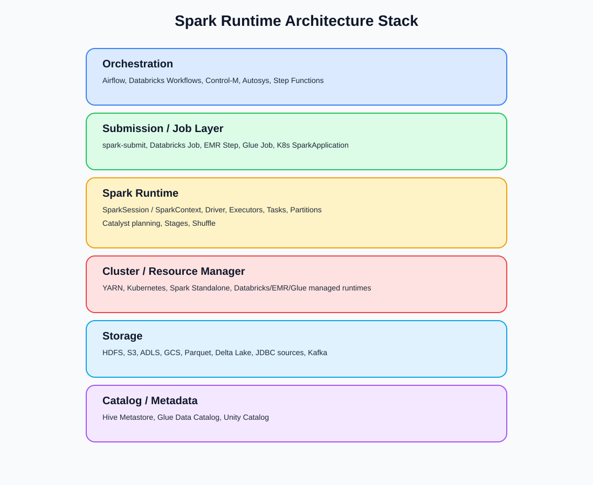
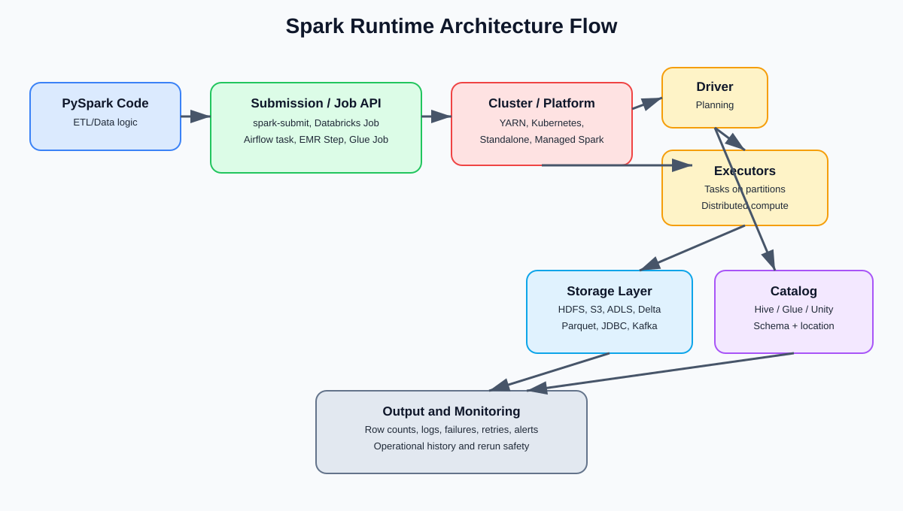

Spark Runtime Architecture Quest
Production architecture view for PySpark jobs
1. The Core Idea
A PySpark job is not just Python code. It sits inside a production runtime architecture where code defines work and the platform controls resources and execution.
Punch line: Code says what to do. The platform decides where and with what resources it runs.
2. Architecture Layers
Layer 1 - PySpark Application Code
Defines ETL/data logic: read, transform, join, aggregate, validate, write.
Layer 2 - Submission / Job Layer
Starts jobs and passes config such as app name, deploy mode, executors, memory, cores, and parameters.
spark-submit \
--master yarn \
--deploy-mode cluster \
--num-executors 8 \
--executor-memory 4G \
--executor-cores 2 \
daily_salary_etl.pyLayer 3 - Spark Runtime
Driver plans and schedules. Executors run distributed tasks on partitions.
Layer 4 - Cluster / Resource Manager
Allocates compute resources (YARN, Kubernetes, Standalone, managed runtimes).
Layer 5 - Storage Layer
Data lives in HDFS, S3, ADLS, GCS, Parquet, Delta, JDBC systems, Kafka, and similar stores.
Layer 6 - Catalog / Metadata Layer
Tracks table schema, location, and permissions (Hive Metastore, Glue Catalog, Unity Catalog).
Layer 7 - Orchestration Layer
Coordinates scheduling, dependencies, retries, alerts, and operational history.
3. Platform Families
- Hadoop / YARN Spark: classic enterprise pattern.
- Spark on Kubernetes: driver/executors as pods.
- Spark Standalone: Spark built-in manager.
- Databricks: managed Spark/lakehouse platform.
- Amazon EMR: managed Hadoop/Spark clusters on AWS.
- AWS Glue: managed serverless-style Spark ETL.
4. Common Architecture Flows
Flow A (YARN): Airflow -> spark-submit -> YARN -> Spark runtime -> HDFS/S3/Hive -> output
Flow B (Databricks): Job/Workflow -> cluster -> Spark runtime -> Delta/object storage -> catalog -> output
Flow C (Glue): Glue Job -> managed Spark runtime -> S3 -> Glue Catalog -> output
Flow D (Kubernetes): spec/operator/spark-submit -> Kubernetes -> driver/executor pods -> storage -> output
Diagram Assets


5. Practical Classification
Spark = compute engine. PySpark = Python API. spark-submit = launcher. Airflow = orchestrator. YARN/K8s/Standalone = resource managers. Databricks/EMR/Glue = managed platform families.
6. Interview-Safe Answer
A PySpark job is part of a larger runtime architecture: submission starts the job, Spark runs driver/executors, a manager/platform allocates resources, storage holds data, metadata catalogs describe tables, and orchestration coordinates dependencies and retries.
Punch line: PySpark defines the work; the platform executes and governs it.
7. Common Confusions
- Code usually does not pick physical machines directly.
- Airflow orchestrates jobs; Spark performs distributed execution.
- Hadoop is an ecosystem; Spark is a compute engine.
- Databricks is a platform; Spark is the engine it uses.
- EMR and Glue are both AWS services, but with different control/abstraction levels.
8. Source Notes
- Apache Spark cluster overview (cluster managers allocate resources; executors run computations).
- Apache Spark submission docs (spark-submit launch pattern).
- Databricks Jobs / Workflows orchestration model.
- Amazon EMR managed Hadoop/Spark cluster model.
- AWS Glue managed/serverless-style Spark ETL model.